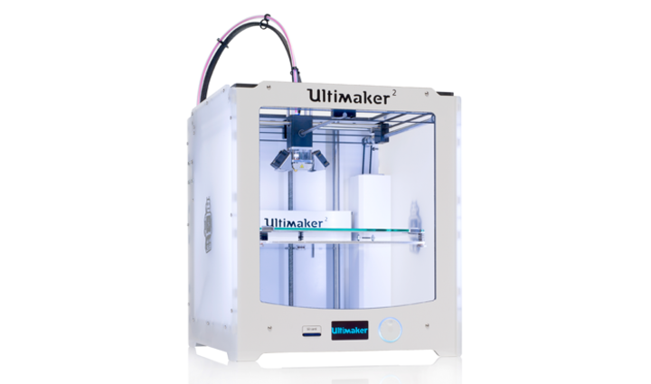
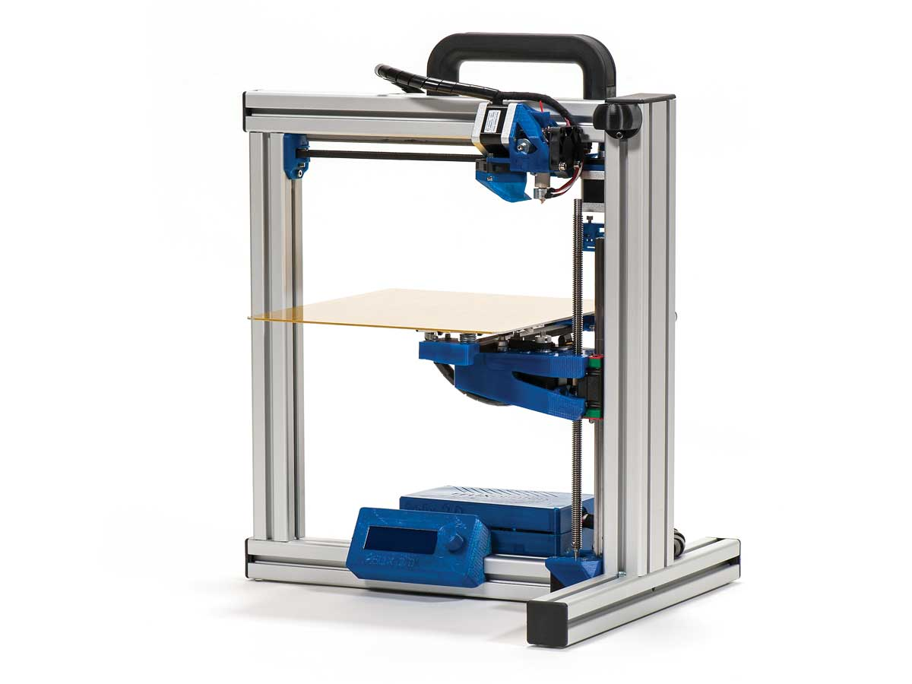
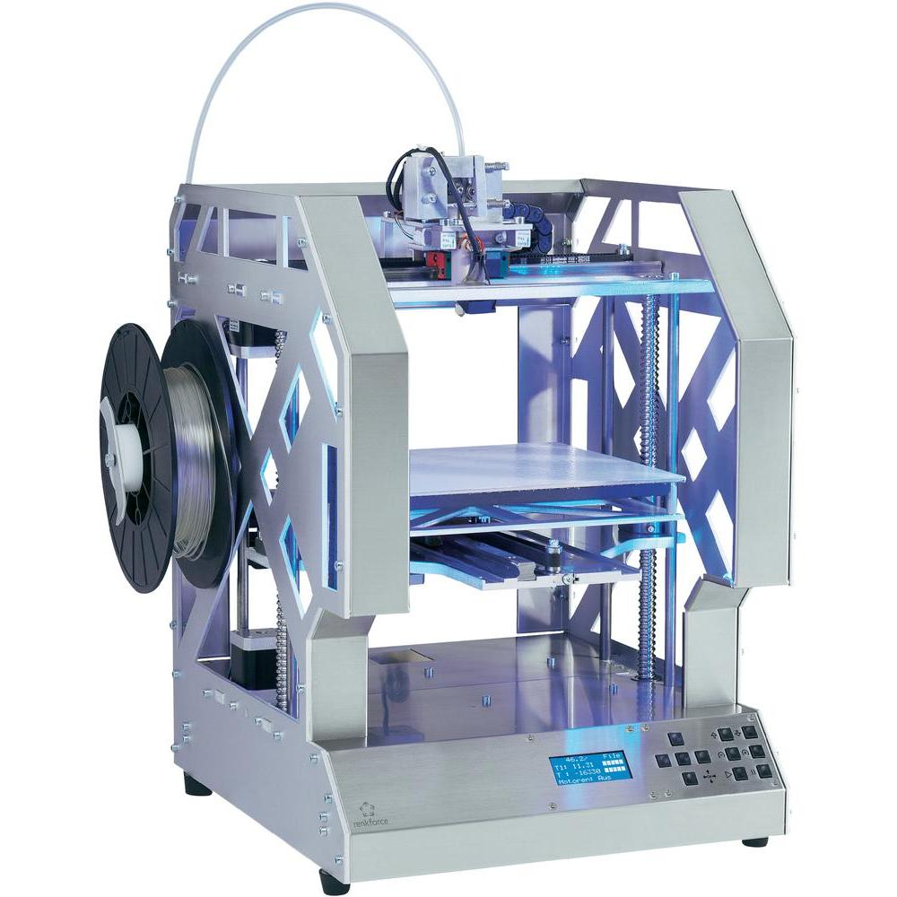

La Ultimaker no sólo consigue unos acabados de primera, sino que también proporcionó los mejores resultados, con diferencia. Las impresiones eran de buena calidad y muy detalladas. Pero también tenemos quejas: hace ruido y huele bastante durante las impresiones.
Felix Robotics 3.0 Dual Extruder

La Felix tiene dos cabezales de impresión (extruder). Así, puede imprimir con filamento en uno y con el segundo colocar material de soporte para objetos con salientes (por ejemplo, la nariz de una cabeza). El material de soporte se quita con agua caliente.

Hasta que la Renkforce imprimió objetos grandes pasaron horas. Dos problemas entre muchos: destrozaba el filamento en los rodillos de guía y el calibrado de fábrica no sirvió de nada. Tras solventar estos problemas, la Renkforce logró proporcionar buenas impresiones.
XYZ Printing Da Vinci 1.0

No nos lo pudimos creer, pero venía con un tubo de pegamento. Con él debes untar la placa de impresión, para que el modelo se quede fijo. Pero eso no funcionó bien y las impresiones terminaron en la basura. Otro problema: sólo puedes utilizar el caro filamento del propio fabricante.
Siguiente ---> 2 - 3